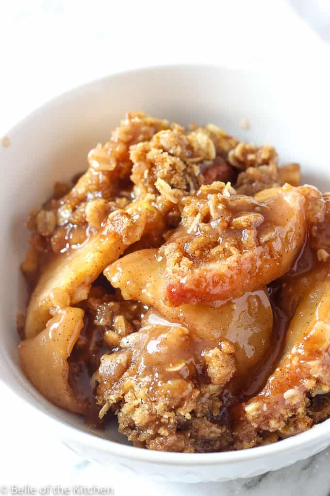

Fruit Crisp

Berries, apples, cherries, peaches, plums, rhubarb are all great choices for this delicious fruit crisp.
2½ lbtart apples or other fruit50 gsugar2 tbsplemon juice (30 grams)2 tbspcornstarch (15 grams)95 gall-purpose flour115 gbrown sugar1 tspground cinnamon½ tspsalt1 stickbutter (113 grams)¼ tspgrated/ground nutmeg (optional)½ cupsliced almonds (optional)
Preheat the oven to 375˚F. Have ready a 10-inch cast iron or 2-quart baking dish.
Cut the fruit into 1-inch chunks (if using apples, select tart, crisp ones to balance the sweetness of the topping.), and spread evenly in the cast iron/baking dish and toss with the white sugar, lemon juice and cornstarch.
Combine everything else except the butter and almonds in a bowl or food processor. Then add the butter (cut into small pieces), cut in the butter or pulse until the mixture resembles coarse bread crumbs. Then add the almonds if using.
Scatter the topping evenly over the fruit. Bake until topping is golden brown, the juices are bubbling, and the apples are tender. 50-55 minutes (start checking at 40 minutes if using a tender fruit). Serve hot or at room temperature with some vanilla ice cream.